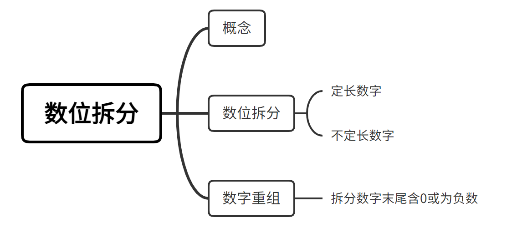
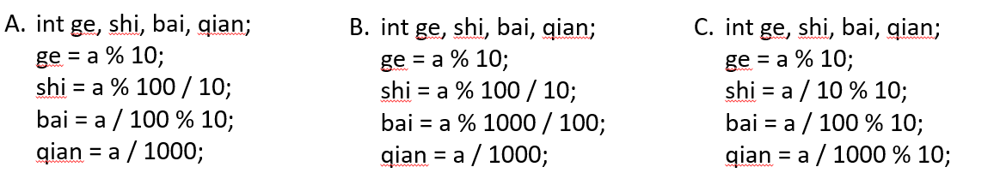

一个数字，由数位和每个数位上的数字组成。
数位，是指一个数中每个数字所占的位置。
例如，153，就是一个三位数，含有个、十、百3个数位。
那如何将153的各位数字拆分出来呢？
| 百位 | 十位 | 个位 | ||
|---|---|---|---|---|
| 153 | 153 / 100 % 10 = 1 | 153 / 10 % 10 = 5 | 153 % 10 = 3 |
因此，对于一个三位数 n，我们可以使用这种方法得到每一位上的数字：
| 百位 | 十位 | 个位 | ||
|---|---|---|---|---|
| n | n / 100 % 10 | n / 10 % 10 | n % 10 |
动手练习：

一个数字，由符号位、数位和每个数位上的数字组成。
数位，是指一个数字中每一个数字所占的位置。
例如，153，就是一个三位数，含有个、十、百3个数位。
以四位数字为例，对四位数拆分的方法有很多，如下：

以上三种都是正确拆分四位数字的方法，因此我们可以总结一个规律，模运算%可以取到数字的后几位，除法运算/可以抹去数字的后几位。
但当我们遇到不知道有多位的数字该如何拆分呢？根据上述C选项可知，只需重复执行%10和/10的操作，直到原数字为0为止，即可得到每位上的数字。
数位拆分步骤如下：
数位拆分模板如下：
1int n; //原数字2while(n != 0){ //循环条件3 cout << n % 10; //取末位4 n = n / 10; //抹掉末位5}题目练习：尝试补全程序
请统计某个给定范围[L, R]的所有整数中，有多少个数字包含 8 ，若一个数字包含多个8，则算作一个数字。
输入共 1 行，为两个正整数 L 和 R，之间用一个空格隔开。1 ≤ L ≤R≤ 10000。
输出共 1 行，表示L和R之间（包含L和R），有多少个数字包含8。
231//尝试填空2using namespace std;4int main() {5 //定义输入6 int L, R;7 cin >> L >> R;8 int cnt = 0;9 //遍历L到R（包括L和R）间的所有数字10 for (int i = L; i <= R; i++) {11 ???;12 //拆分每一个数字，判断当前数字是否包含813 while (t != 0) {14 if (???){15 cnt++;16 ???;17 } 18 ???;19 }20 }21 cout << cnt << endl;22 return 0;23}当拆分的数字末尾含0或为负数时，就不能简单地循环输出末尾上的数字，在这里我们学习了数字重组。依然要利用%10和/10不断取出最后一位，但不能直接输出，而要加到一个新数的末尾，最终这个新数就是合法的答案。
| n | %10得到末位 | 末尾加入新数 | 除以10后的n | |
|---|---|---|---|---|
| 第1轮 | -380 | 0 | 0 | -38 |
| 第2轮 | -38 | -8 | -8 | -3 |
| 第3轮 | -3 | -3 | -83 | 0（结束） |
数字重组步骤如下：
数字重组模板如下：
61int num = 0; //新数字基础为02while(n != 0){3 int k = n % 10;4 num = num * 10 + k; //组成新数字5 n = n / 10; 6}题目练习：尝试补全程序
一个整数的“反置数”指的是把该整数的每一位数字的顺序颠倒过来所得到的另一个整数。如果一个整数的末尾是以0结尾，那么在它的反置数当中，这些0就被省略掉了。请编写一个程序，输入两个整数，然后计算这两个整数的反置数之和sum，然后再把sum的反置数打印出来。
输入只有一行，包括两个正整数（小于10^9)，中间用空格隔开。
输出只有一行，即相应的结果。
191//尝试填空2//一共进行了三次反置操作，使用函数可以简化代码4int revert(int x){5 int d, answer = ?;6 //逐位反置7 while(x > 0) {8 d = x % 10;9 ???;10 ???; 11 }12 return answer;13}14int main(){15 int a,b;16 scanf("%d%d", &a, &b);17 printf("%d", ???);18 return 0;19}都完成啦！😀😀😀
哇！这些题也完成了，给你360度旋转的赞👍
这部分题目难度较大，需要对所学知识点灵活运用，如果暂时搞不定，可以过段时间回来再来自测，发现自己的进步哦~
挑战题也全部完成，不愧是我！
对于数字的拆位问题，可以将数字当作字符串处理，尤其是解决大数字的数字反转问题。下面介绍未知长度单个字符的循环输入与输出，并使用字符串来解决数位拆分和数字重组问题。
使用cin读入，只要有字符能够读入，其结果即为真；当没有字符可以读入，结果为假，循环结束。
11while (cin >> a[len]) len++;scanf判输入是否终止，EOF（end of file）是文件结束符，当scanf读取内容发生错误或者读到文件结尾的时候就会返回EOF。
11while(scanf(" %c", &a[len]) != EOF) len++;scanf判占位符个数，scanf 返回值表示成功输入参数的个数。
11while(scanf(" %c", &a[len]) == 1) len++;使用while
21while(len--)cout << a[len];2//while(n--)常用于让循环执行n次使用for
21for(int i = len – 1; i >= 0; i--）2 cout << a[i];将数字当作字符串读入字符数组中，再从后往前逆序遍历数组输出即可。
41char a[10]; 2int len = 0; //代表当前a数组中字母的长度数量3while(cin >> a[len]) len++; //一位一位读，能读就继续4while(len--)cout << a[len]; //len递减输出此时需特判负号和末尾0的情况。将负数和正数分开处理，若为正数，则从后向前遍历数组，循环跳过末尾的所有0，直至第一个非0数字字符后，逆序输出；若为负数，需先输出负号“-”，再进行上述操作。
141char a[21];2cin >> a;3int len = strlen(a);4if(a[0] == '-'){ //处理负数5 cout << '-';6 while(a[len - 1] == '0' && len > 1) len--; //跳过末尾07 while(a[len - 1] != '-'){8 cout << a[len - 1];9 len--;10 }11}else{12 while(a[len - 1] == '0' && len > 1) len--; //跳过末尾013 while(len--) cout << a[len];14}接下来动动脑筋思考一下，如何处理小数、分数、甚至百分数的数字反转呢，就让我们使用字符串来解决更难的数字反转问题吧~
给定一个数，请将该数各个位上数字反转得到一个新数。这个数可以是小数，分数，百分数，整数。 翻转方式如下：
数据保证: 对于整数翻转而言，整数原数和整数新数满足整数的常见形式，即除非给定的原数为零，否则反转后得到的新数和原来的数字的最高位数字不应为零。 对于小数翻转而言，其小数点前面部分同上，小数点后面部分的形式，保证满足小数的常见形式，也就是原数小数点部分的末尾没有多余的 0（但是存在类似1.0这样的形式，此时需要保留 1 个 0。若反转之后末尾数字出现 0，请省略多余的 0） 对于分数翻转而言，分数不约分，分子和分母都不是小数。输入的分母不为0。与整数翻转相关规定见上。 对于百分数翻转而言，见与整数翻转相关内容。注意所有数据不存在负数。
一个数 s
一个数，即 s 的反转数
输入 #1
115087462
输出 #1
112647805
输入 #2
11600.084
输出 #2
116.48
输入 #3
11700/27
输出 #3
117/72
输入 #4
118670%
输出 #4
11768%
所有数据：20%是整数，不大于20位 30%是小数，整数部分和小数部分均不大于10位 30%是分数，分子和分母均不大于10位 20%是百分数，分子不大于19位
挑战一下数字反转（升级版）
一定要先思考，再来看解析哦~
由题可知：整数和百分数的反转规则相同，都是将整数的数位对调；小数和分数是符号左右两边看作两个数进行反转，因此可以分成两大类进行讨论。
对整数、百分数类型特判
整数反转与拓展篇1.3 部分相同，由于题目数据不存在负数，所以只需跳过末尾所有0即可。百分数则在反转后再输出百分号“%”。
对小数、分数类型特判
需标记符号位所在的位置，将符号两边的数字分别处理。
首先处理左侧数字，从符号位开始逆序跳过末尾0，找到第一个非0数字，逆序输出；
其次，输出相应符号；
最后处理右侧数字，由于小数从小数点后第一个非0字开始反转，因此需顺序跳过所有0后，再从末尾逆序跳过末尾0，剩余的数字逆序输出。
已经知道做题思路，看看可不可以正确完成这道题目啦！